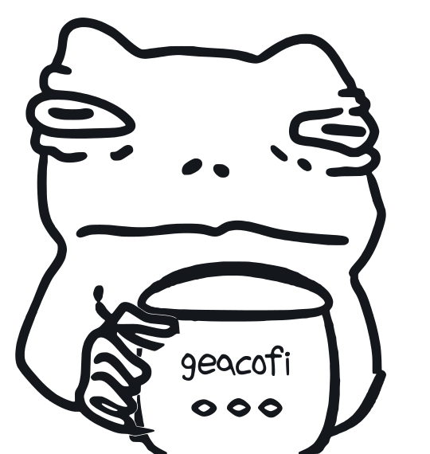
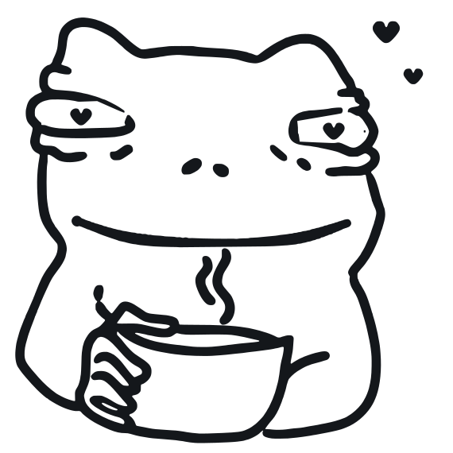

Biblia de la rana · 05
poses creativas
Personalidad y humor: música, siestas y amor por el café. Pensadas para la dirección C.




Personalidad y humor: música, siestas y amor por el café. Pensadas para la dirección C.

